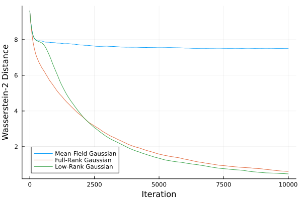

Reparameterizable Variational Families
The RepGradELBO objective assumes that the members of the variational family have a differentiable sampling path. We provide multiple pre-packaged variational families that can be readily used.
The LocationScale Family
The location-scale variational family is a family of probability distributions, where their sampling process can be represented as
\[z \sim q_{\lambda} \qquad\Leftrightarrow\qquad z \stackrel{d}{=} C u + m;\quad u \sim \varphi\]
where $C$ is the scale, $m$ is the location, and $\varphi$ is the base distribution. $m$ and $C$ form the variational parameters $\lambda = (m, C)$ of $q_{\lambda}$. The location-scale family encompasses many practical variational families, which can be instantiated by setting the base distribution of $u$ and the structure of $C$.
The probability density is given by
\[ q_{\lambda}(z) = {|C|}^{-1} \varphi(C^{-1}(z - m)),\]
the covariance is given as
\[ \mathrm{Var}\left(q_{\lambda}\right) = C \mathrm{Var}(\varphi) C^{\top}\]
and the entropy is given as
\[ \mathbb{H}(q_{\lambda}) = \mathbb{H}(\varphi) + \log |C|,\]
where $\mathbb{H}(\varphi)$ is the entropy of the base distribution. Notice that $\mathbb{H}(\varphi)$ does not depend on the variational parameters $\lambda$. The derivative of the entropy with respect to $\lambda$ is thus independent of the base distribution.
API
For stable convergence, the initial scale needs to be sufficiently large and well-conditioned. Initializing scale to have small eigenvalues will often result in initial divergences and numerical instabilities.
AdvancedVI.MvLocationScale — TypeMvLocationScale(location, scale, dist)The location scale variational family broadly represents various variational families using location and scale variational parameters.
It generally represents any distribution for which the sampling path can be represented as follows:
d = length(location)
u = rand(dist, d)
z = scale*u + locationThe following are specialized constructors for convenience:
AdvancedVI.FullRankGaussian — FunctionFullRankGaussian(μ, L)Construct a Gaussian variational approximation with a dense covariance matrix.
Arguments
μ::AbstractVector{T}: Mean of the Gaussian.L::LinearAlgebra.AbstractTriangular{T}: Cholesky factor of the covariance of the Gaussian.
AdvancedVI.MeanFieldGaussian — FunctionMeanFieldGaussian(μ, L)Construct a Gaussian variational approximation with a diagonal covariance matrix.
Arguments
μ::AbstractVector{T}: Mean of the Gaussian.L::Diagonal{T}: Diagonal Cholesky factor of the covariance of the Gaussian.
Gaussian Variational Families
using AdvancedVI, LinearAlgebra, Distributions;
μ = zeros(2);
L = LowerTriangular(diagm(ones(2)));
q = FullRankGaussian(μ, L)
L = Diagonal(ones(2));
q = MeanFieldGaussian(μ, L)Student-$t$ Variational Families
using AdvancedVI, LinearAlgebra, Distributions;
μ = zeros(2);
ν = 3;
# Full-Rank
L = LowerTriangular(diagm(ones(2)));
q = MvLocationScale(μ, L, TDist(ν))
# Mean-Field
L = Diagonal(ones(2));
q = MvLocationScale(μ, L, TDist(ν))Laplace Variational families
using AdvancedVI, LinearAlgebra, Distributions;
μ = zeros(2);
# Full-Rank
L = LowerTriangular(diagm(ones(2)));
q = MvLocationScale(μ, L, Laplace())
# Mean-Field
L = Diagonal(ones(2));
q = MvLocationScale(μ, L, Laplace())The LocationScaleLowRank Family
In practice, LocationScale families with full-rank scale matrices are known to converge slowly as they require a small SGD stepsize. Low-rank variational families can be an effective alternative[ONS2018]. LocationScaleLowRank generally represent any $d$-dimensional distribution which its sampling path can be represented as
\[z \sim q_{\lambda} \qquad\Leftrightarrow\qquad z \stackrel{d}{=} D u_1 + U u_2 + m;\quad u_1, u_2 \sim \varphi\]
where $D \in \mathbb{R}^{d \times d}$ is a diagonal matrix, $U \in \mathbb{R}^{d \times r}$ is a dense low-rank matrix for the rank $r > 0$, $m \in \mathbb{R}^d$ is the location, and $\varphi$ is the base distribution. $m$, $D$, and $U$ form the variational parameters $\lambda = (m, D, U)$.
The covariance of this distribution is given as
\[ \mathrm{Var}\left(q_{\lambda}\right) = D \mathrm{Var}(\varphi) D + U \mathrm{Var}(\varphi) U^{\top}\]
and the entropy is given by the matrix determinant lemma as
\[ \mathbb{H}(q_{\lambda}) = \mathbb{H}(\varphi) + \log |\Sigma| = \mathbb{H}(\varphi) + 2 \log |D| + \log |I + U^{\top} D^{-2} U|,\]
where $\mathbb{H}(\varphi)$ is the entropy of the base distribution.
Consider a 30-dimensional Gaussian with a diagonal plus low-rank covariance structure, where the true rank is 3. Then, we can compare the convergence speed of LowRankGaussian versus FullRankGaussian:

As we can see, LowRankGaussian converges faster than FullRankGaussian. While FullRankGaussian can converge to the true solution since it is a more expressive variational family, LowRankGaussian gets there faster.
MvLocationScaleLowRank tend to work better with the Optimisers.Adam optimizer due to non-smoothness. Other optimisers may experience divergences.
API
AdvancedVI.MvLocationScaleLowRank — TypeMvLocationLowRankScale(location, scale_diag, scale_factors, dist)Variational family with a covariance in the form of a diagonal matrix plus a squared low-rank matrix. The rank is given by size(scale_factors, 2).
It generally represents any distribution for which the sampling path can be represented as follows:
d = length(location)
r = size(scale_factors, 2)
u_diag = rand(dist, d)
u_factors = rand(dist, r)
z = scale_diag.*u_diag + scale_factors*u_factors + locationThe logpdf of MvLocationScaleLowRank has an optional argument non_differentiable::Bool (default: false). If set as true, a more efficient $O\left(r d^2\right)$ implementation is used to evaluate the density. This, however, is not differentiable under most AD frameworks due to the use of Cholesky lowrankupdate. The default value is false, which uses a $O\left(d^3\right)$ implementation, is differentiable and therefore compatible with the StickingTheLandingEntropy estimator.
The following is a specialized constructor for convenience:
AdvancedVI.LowRankGaussian — FunctionLowRankGaussian(μ, D, U)Construct a Gaussian variational approximation with a diagonal plus low-rank covariance matrix.
Arguments
μ::AbstractVector{T}: Mean of the Gaussian.D::Vector{T}: Diagonal of the scale.U::Matrix{T}: Low-rank factors of the scale, wheresize(U,2)is the rank.
- ONS2018Ong, V. M. H., Nott, D. J., & Smith, M. S. (2018). Gaussian variational approximation with a factor covariance structure. Journal of Computational and Graphical Statistics, 27(3), 465-478.